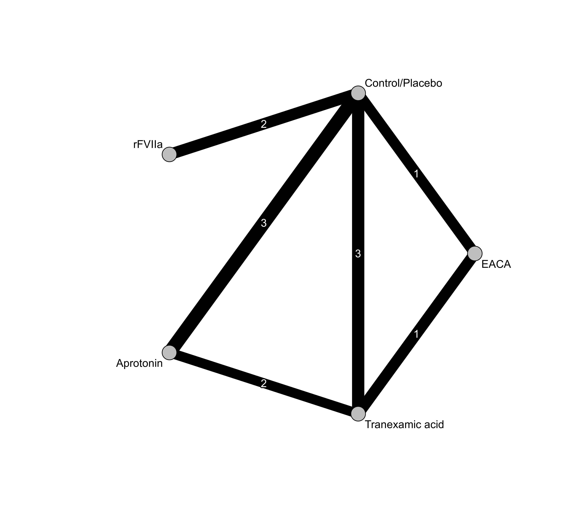
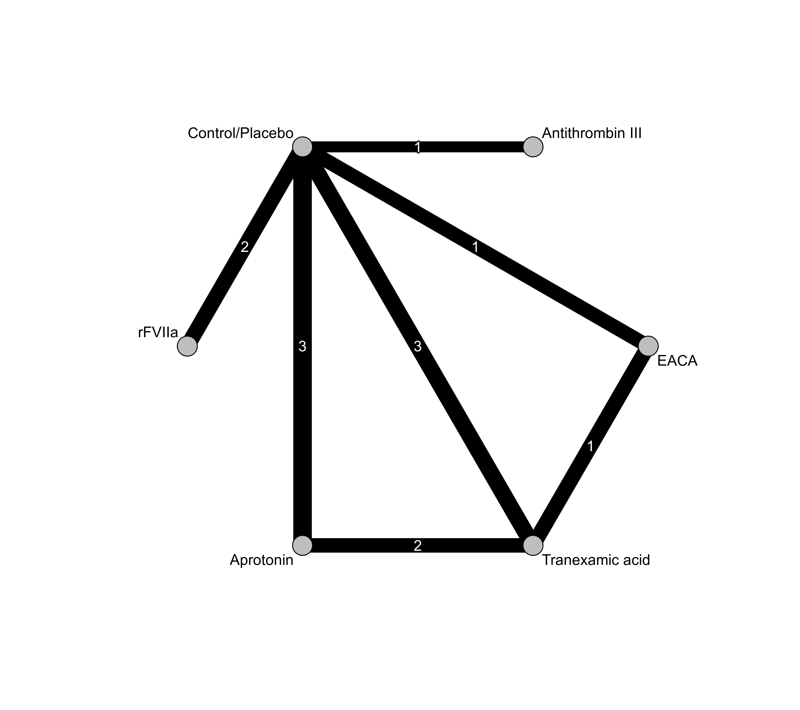
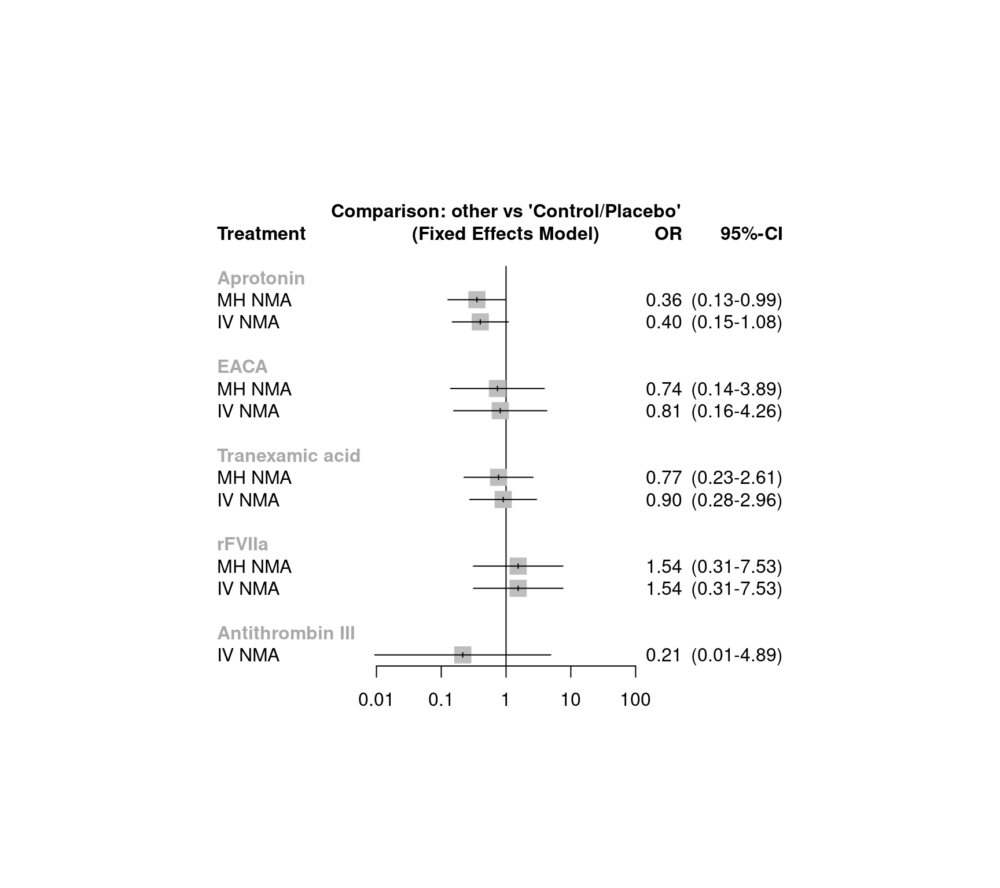
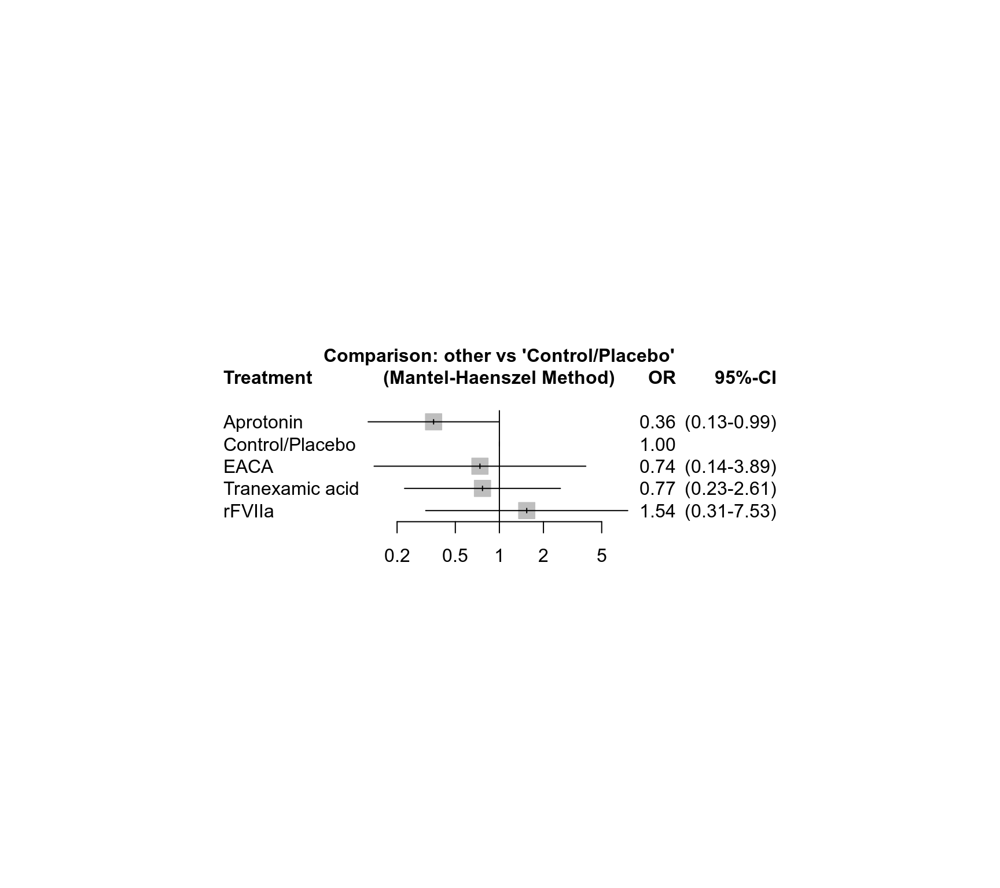

dat.gurusamy2011.RdResults from 14 trials examining the mortality risk of interventions for decreasing blood loss and blood transfusion requirements during liver transplantation.
dat.gurusamy2011The data frame contains the following columns:
| study | character | study information |
| treatment | character | treatment |
| death | integer | mortality at 60 days post-transplantation |
| n | integer | number of individuals |
This network meta-analysis compared the effectiveness of seven interventions for decreasing blood loss and blood transfusion requirements during liver transplantation (Gurusamy et al., 2011).
Fourteen studies reported mortality at 60 days, in 1,002 patients. Forty-five deaths were reported across all studies (4.5%). Six studies observed deaths in all treatment arms while three studies did not observe any deaths.
This data set was used in Efthimiou et al. (2019) to introduce the Mantel-Haenszel method for network meta-analysis.
One of the treatments (solvent detergent plasma) was only included in one study with zero events in both treatment arms; this study was excluded from all network meta-analyses. In addition, no death was observed in the antithrombin III arm of the only study evaluating this treatment which was excluded from the Mantel-Haenszel network meta-analysis.
Gurusamy, K. S., Pissanou, T., Pikhart, H., Vaughan, J., Burroughs, A. K., & Davidson, B. R. (2011). Methods to decrease blood loss and transfusion requirements for liver transplantation. Cochrane Database of Systematic Reviews, 12, CD009052. https://doi.org/10.1002/14651858.CD009052.pub2
Efthimiou, O., Rücker, G., Schwarzer, G., Higgins, J., Egger, M., & Salanti, G. (2019). A Mantel-Haenszel model for network meta-analysis of rare events. Statistics in Medicine, 38(16), 2992–3012. https://doi.org/10.1002/sim.8158
medicine, odds ratios, network meta-analysis, Mantel-Haenszel method
### Show first 6 rows of the dataset
head(dat.gurusamy2011)
#> study treatment death n
#> 1 Findlay 2001 Control/Placebo 1 30
#> 2 Findlay 2001 Aprotonin 0 33
#> 3 Garcia-Huete 1997 Control/Placebo 3 41
#> 4 Garcia-Huete 1997 Aprotonin 1 39
#> 5 Porte 2000 Control/Placebo 4 48
#> 6 Porte 2000 Aprotonin 5 89
### Only study evaluating solvent detergent plasma
subset(dat.gurusamy2011, study == "Williamson 1999")
#> study treatment death n
#> 24 Williamson 1999 Control/Placebo 0 13
#> 25 Williamson 1999 Solvent detergent plasma 0 12
### Only study evaluating antithrombin III
subset(dat.gurusamy2011, study == "Baudo 1992")
#> study treatment death n
#> 14 Baudo 1992 Control/Placebo 2 16
#> 15 Baudo 1992 Antithrombin III 0 13
# \dontrun{
### Load netmeta package
suppressPackageStartupMessages(library(netmeta))
### Print odds ratios and confidence limits with two digits
settings.meta(digits = 2)
### Change appearance of confidence intervals
cilayout("(", "-")
### Transform data from long arm-based format to contrast-based
### format. Argument 'sm' has to be used for odds ratio as summary
### measure; by default the risk ratio is used in the metabin function
### called internally.
pw <- pairwise(treatment, death, n, studlab = study,
data = dat.gurusamy2011, sm = "OR")
### Conduct Mantel-Haenszel network meta-analysis (NMA)
net.MH <- netmetabin(pw, ref = "cont")
#> Warning: Studies without any events excluded from network meta-analysis: 'Himmelreich 1992' - 'Pugliese 2007' - 'Williamson 1999'
#> Warning: Treatment arm 'Antithrombin III' without events in design 'Antithrombin III:Control/Placebo' excluded from network meta-analysis.
#> Warning: Design 'Antithrombin III:Control/Placebo' with single treatment arm excluded from network meta-analysis.
### Conduct inverse variance (IV) network meta-analysis
net.IV <- netmeta(pw, ref = "cont")
#> Warning: Comparisons with missing TE / seTE or zero seTE not considered in network meta-analysis.
#> Comparisons not considered in network meta-analysis:
#> studlab treat1 treat2 TE seTE
#> Pugliese 2007 Control/Placebo rFVIIa NA NA
#> Himmelreich 1992 Control/Placebo Aprotonin NA NA
#> Williamson 1999 Control/Placebo Solvent detergent plasma NA NA
#>
### Network graph (Mantel-Haenszel NMA)
netgraph(net.MH, seq = "optimal", col = "black", plastic = FALSE,
points = TRUE, pch = 21, cex.points = 3, col.points = "black",
bg.points = "gray", thickness = "se.fixed",
number.of.studies = TRUE)

### Full network graph (based on inverse variance method, including
### study comparing Antithrombin III with Control/Placebo)
netgraph(net.IV,
seq = "optimal", col = "black", plastic = FALSE,
points = TRUE, pch = 21, cex.points = 3, col.points = "black",
bg.points = "gray", thickness = "se.fixed",
number.of.studies = TRUE)

### Compare results for Mantel-Haenszel and IV NMA
forest(netbind(net.MH, net.IV,
random = FALSE, name = c("MH NMA", "IV NMA")))

### Show results for Mantel-Haenszel NMA
net.MH
#> Number of studies: k = 10
#> Number of pairwise comparisons: m = 12
#> Number of observations: o = 905
#> Number of treatments: n = 5
#> Number of designs: d = 5
#>
#> Fixed effects model (Mantel-Haenszel method)
#>
#> Treatment estimate (sm = 'OR', comparison: other treatments vs 'Control/Placebo'):
#> OR 95%-CI z p-value
#> Aprotonin 0.36 (0.13-0.99) -1.97 0.0488
#> Control/Placebo . . . .
#> EACA 0.74 (0.14-3.89) -0.36 0.7188
#> Tranexamic acid 0.77 (0.23-2.61) -0.43 0.6707
#> rFVIIa 1.54 (0.31-7.53) 0.53 0.5957
#>
#> Test of inconsistency (between designs):
#> Q d.f. p-value
#> 1.88 2 0.3907
forest(net.MH)

### League table with network estimates in lower triangle and direct
### estimates in upper triangle
netleague(net.MH)
#> League table (fixed effects model):
#>
#> Aprotonin 0.47 (0.15- 1.45) . 0.16 (0.02- 1.40) .
#> 0.36 (0.13- 0.99) Control/Placebo 1.44 (0.22- 9.41) 2.13 (0.54- 8.42) 0.65 (0.13- 3.19)
#> 0.48 (0.08- 3.08) 1.36 (0.26- 7.17) EACA 1.00 (0.19- 5.26) .
#> 0.46 (0.12- 1.85) 1.30 (0.38- 4.44) 0.96 (0.20- 4.59) Tranexamic acid .
#> 0.23 (0.03- 1.53) 0.65 (0.13- 3.19) 0.48 (0.05- 4.78) 0.50 (0.07- 3.71) rFVIIa
### Assess inconsistency
print(netsplit(net.MH), show = "both", ci = TRUE, overall = FALSE,
nchar.trts = 6)
#> Separate indirect from direct design evidence (SIDDE)
#>
#> Fixed effects model:
#>
#> comparison k direct 95%-CI indir. 95%-CI.1 RoR 95%-CI.2 z p-value
#> Aproto:Contro 3 0.47 (0.15-1.45) 0.08 (0.01- 1.04) 5.97 (0.36-98.99) 1.25 0.2125
#> Aproto:Tranex 2 0.16 (0.02-1.40) 0.97 (0.16- 5.96) 0.17 (0.01- 2.78) -1.25 0.2125
#> Tranex:Contro 3 0.47 (0.12-1.85) 2.90 (0.26-32.65) 0.16 (0.01- 2.62) -1.28 0.2000
#>
#> Legend:
#> comparison - Treatment comparison
#> k - Number of studies providing direct evidence
#> direct - Estimated treatment effect (OR) derived from direct evidence
#> indir. - Estimated treatment effect (OR) derived from indirect evidence
#> RoR - Ratio of Ratios (direct versus indirect)
#> z - z-value of test for disagreement (direct versus indirect)
#> p-value - p-value of test for disagreement (direct versus indirect)
#>
#> Abbreviation Treatment name
#> Aproto Aprotonin
#> Contro Control/Placebo
#> Tranex Tranexamic acid
# }